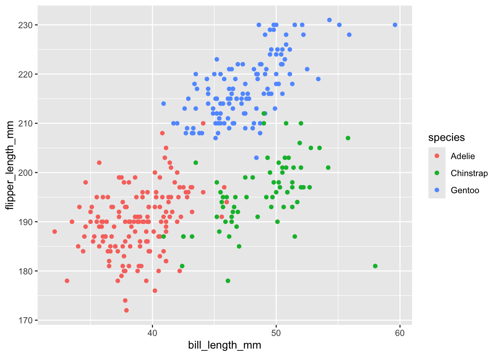
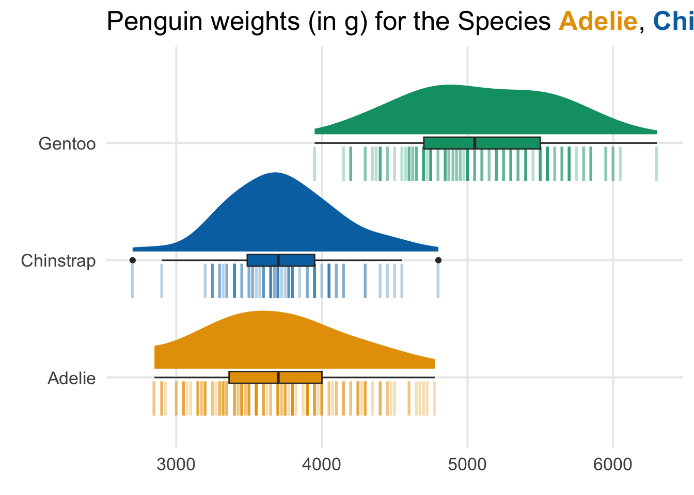
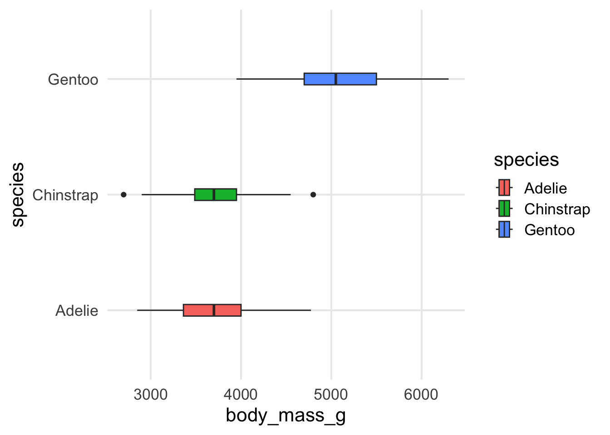
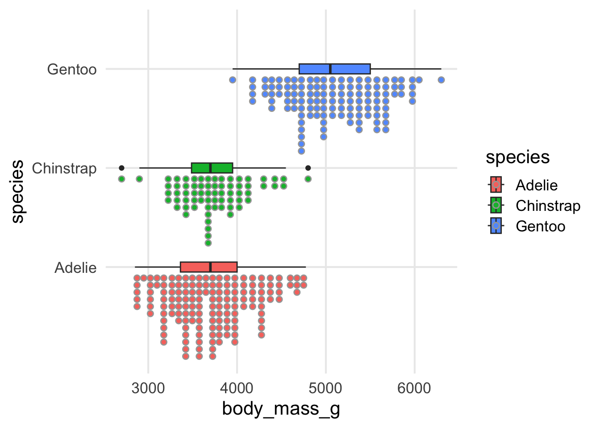
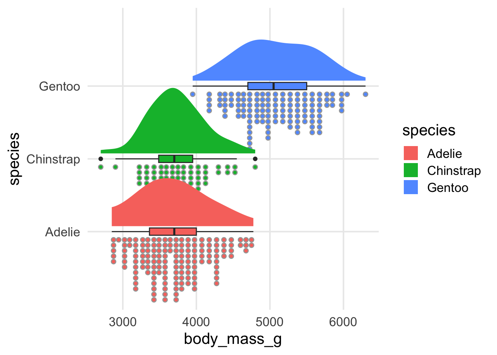
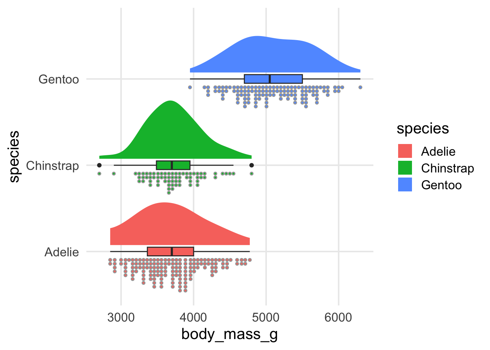
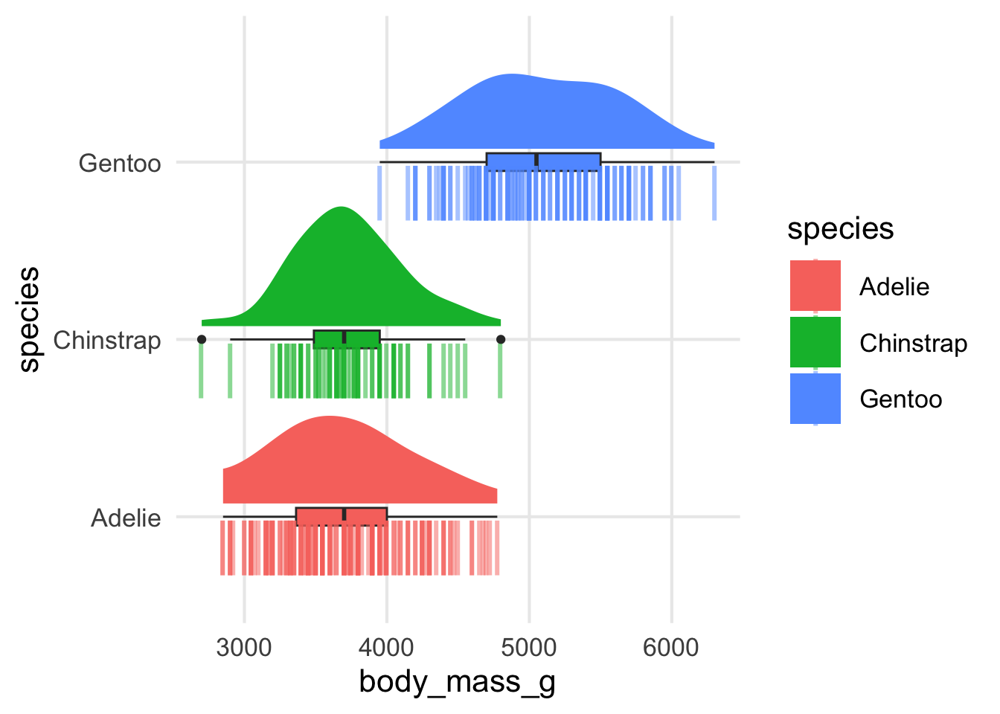

Show the code
100. *9[1] 900This is a post with executable code.
100. *9[1] 90001 - basic ggplot
#install.packages("palmerpenguins")
#library(tidyverse)
library(ggplot2)
ggplot(mpg, aes(displ, hwy, colour = class)) +
geom_point()
this is a callout test
😊 this is really cool
this is a blockqoute
test
library(tidyverse)── Attaching core tidyverse packages ──────────────────────── tidyverse 2.0.0 ──
✔ dplyr 1.1.4 ✔ readr 2.1.5
✔ forcats 1.0.0 ✔ stringr 1.5.1
✔ lubridate 1.9.4 ✔ tibble 3.2.1
✔ purrr 1.0.2 ✔ tidyr 1.3.1
── Conflicts ────────────────────────────────────────── tidyverse_conflicts() ──
✖ dplyr::filter() masks stats::filter()
✖ dplyr::lag() masks stats::lag()
ℹ Use the conflicted package (<http://conflicted.r-lib.org/>) to force all conflicts to become errorslibrary(palmerpenguins)
ggplot(penguins, aes(bill_length_mm, flipper_length_mm, colour = species)) +
geom_point()Warning: Removed 2 rows containing missing values or values outside the scale range
(`geom_point()`).
glimpse(penguins)Rows: 344
Columns: 8
$ species <fct> Adelie, Adelie, Adelie, Adelie, Adelie, Adelie, Adel…
$ island <fct> Torgersen, Torgersen, Torgersen, Torgersen, Torgerse…
$ bill_length_mm <dbl> 39.1, 39.5, 40.3, NA, 36.7, 39.3, 38.9, 39.2, 34.1, …
$ bill_depth_mm <dbl> 18.7, 17.4, 18.0, NA, 19.3, 20.6, 17.8, 19.6, 18.1, …
$ flipper_length_mm <int> 181, 186, 195, NA, 193, 190, 181, 195, 193, 190, 186…
$ body_mass_g <int> 3750, 3800, 3250, NA, 3450, 3650, 3625, 4675, 3475, …
$ sex <fct> male, female, female, NA, female, male, female, male…
$ year <int> 2007, 2007, 2007, 2007, 2007, 2007, 2007, 2007, 2007…##install.packages("thematic")
##install.packages("ggtext")
library(tidyverse)
library(ggdist)
theme_set(
theme_minimal(
base_size = 16,
##base_family = 'Source Sans Pro'
) +
theme(panel.grid.minor = element_blank())
)
## As promised in the last newsletter, today, I will ##show you how to combine multiple visualizations of ##uncertainty to create one very powerful visualization ##which is known as the rain cloud plot.
##So, a plot like this, it looks like this.
colors <- thematic::okabe_ito(3)
names(colors) <- unique(palmerpenguins::penguins$species)
title_text <- glue::glue(
'Penguin weights (in g) for the Species',
'<span style = "color:{colors["Adelie"]}">**Adelie**</span>,',
'<span style = "color:{colors["Chinstrap"]}">**Chinstrap**</span>',
'and',
'<span style = "color:{colors["Gentoo"]}">**Gentoo**</span>',
.sep = ' '
)
palmerpenguins::penguins |>
filter(!is.na(sex)) |>
ggplot(aes(x = body_mass_g, fill = species, y = species)) +
geom_boxplot(width = 0.1) +
geom_dots(
side = 'bottom',
height = 0.55,
position = position_nudge(y = -0.075)
) +
stat_slab(
position = position_nudge(y = 0.075),
height = 0.75
) +
scale_y_discrete(
breaks = c('Adelie', 'Gentoo', 'Chinstrap')
) +
scale_fill_manual(values = colors) +
labs(
x = element_blank(),
y = element_blank(),
title = title_text
) +
theme(
plot.title = ggtext::element_markdown(),
legend.position = 'none'
)
palmerpenguins::penguins |>
filter(!is.na(sex)) |>
ggplot(aes(x = body_mass_g, fill = species, y = species)) +
geom_point(
aes(color = species),
shape = '|',
size = 9,
alpha = 0.3,
position = position_nudge(y = -0.175)
) +
geom_boxplot(
width = 0.1,
) +
stat_slab(
position = position_nudge(y = 0.075),
height = 0.75
) +
scale_y_discrete(
breaks = c('Adelie', 'Gentoo', 'Chinstrap')
) +
scale_fill_manual(values = colors) +
scale_color_manual(values = colors) +
labs(
x = element_blank(),
y = element_blank(),
title = title_text
) +
theme(
plot.title = ggtext::element_markdown(),
legend.position = 'none'
)
## Begin with box plots
palmerpenguins::penguins |>
filter(!is.na(sex)) |>
ggplot(aes(x = body_mass_g, fill = species, y = species)) +
geom_boxplot(width = 0.1)
# Add the dots
library(ggdist)
palmerpenguins::penguins |>
filter(!is.na(sex)) |>
ggplot(aes(x = body_mass_g, fill = species, y = species)) +
geom_boxplot(width = 0.1) +
geom_dots(
side = 'bottom',
position = position_nudge(y = -0.075)
)
# Add the density plots
palmerpenguins::penguins |>
filter(!is.na(sex)) |>
ggplot(aes(x = body_mass_g, fill = species, y = species)) +
geom_boxplot(width = 0.1) +
geom_dots(
side = 'bottom',
position = position_nudge(y = -0.075)
) +
stat_slab(
position = position_nudge(y = 0.075) # move up a little bit
)
# Avoid overlapping
palmerpenguins::penguins |>
filter(!is.na(sex)) |>
ggplot(aes(x = body_mass_g, fill = species, y = species)) +
geom_boxplot(width = 0.1) +
geom_dots(
side = 'bottom',
position = position_nudge(y = -0.075),
height = 0.55
) +
stat_slab(
position = position_nudge(y = 0.075),
height = 0.75
)
palmerpenguins::penguins |>
filter(!is.na(sex)) |>
ggplot(aes(x = body_mass_g, fill = species, y = species)) +
geom_boxplot(width = 0.1) +
geom_point(
aes(color = species),
shape = "|",
size = 10,
alpha = 0.5,
position = position_nudge(y = -0.175)
) +
stat_slab(
position = position_nudge(y = 0.075),
height = 0.75
)